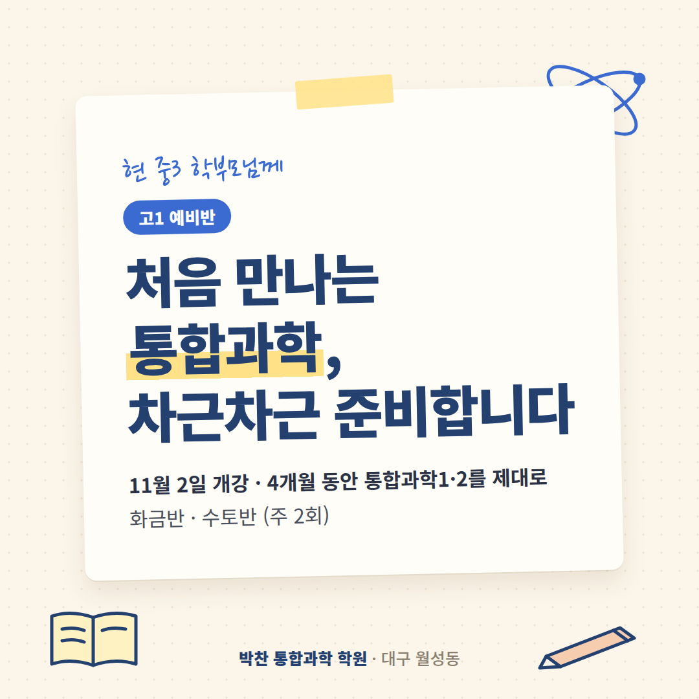
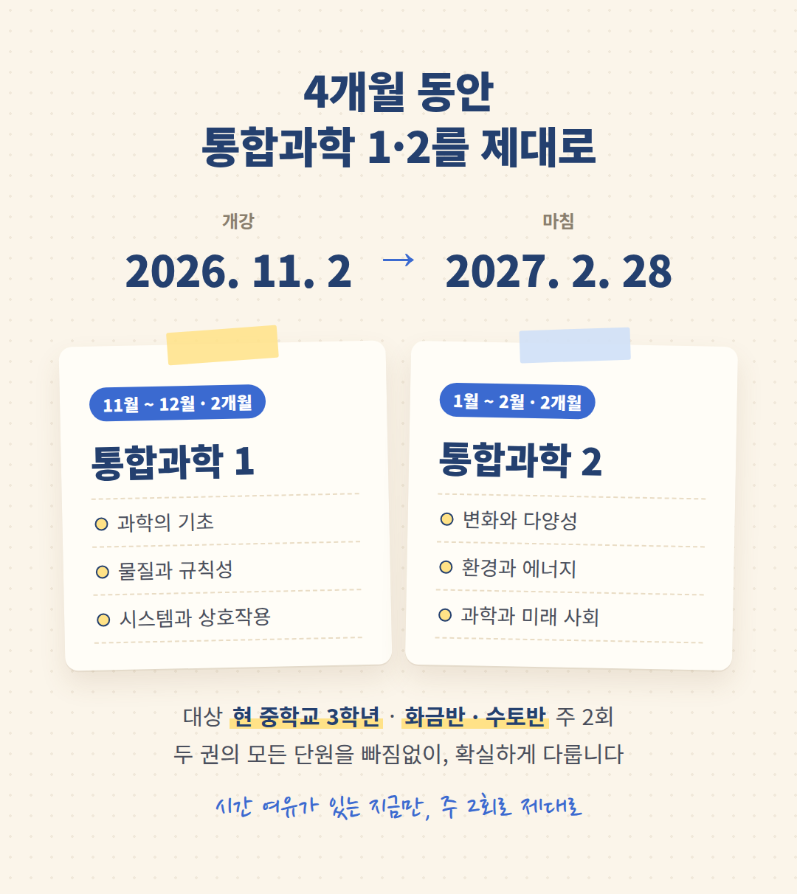
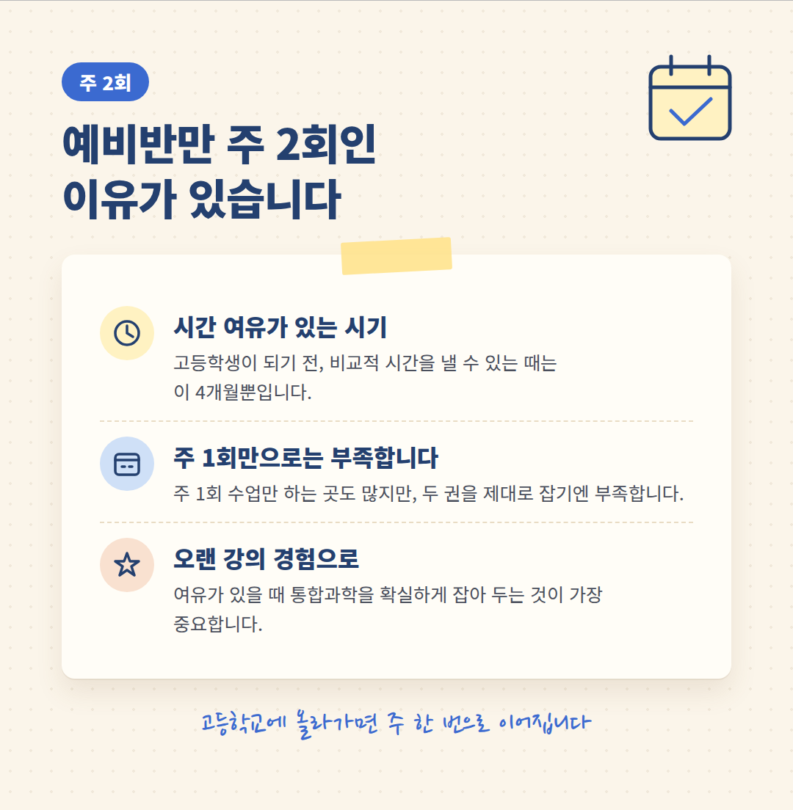
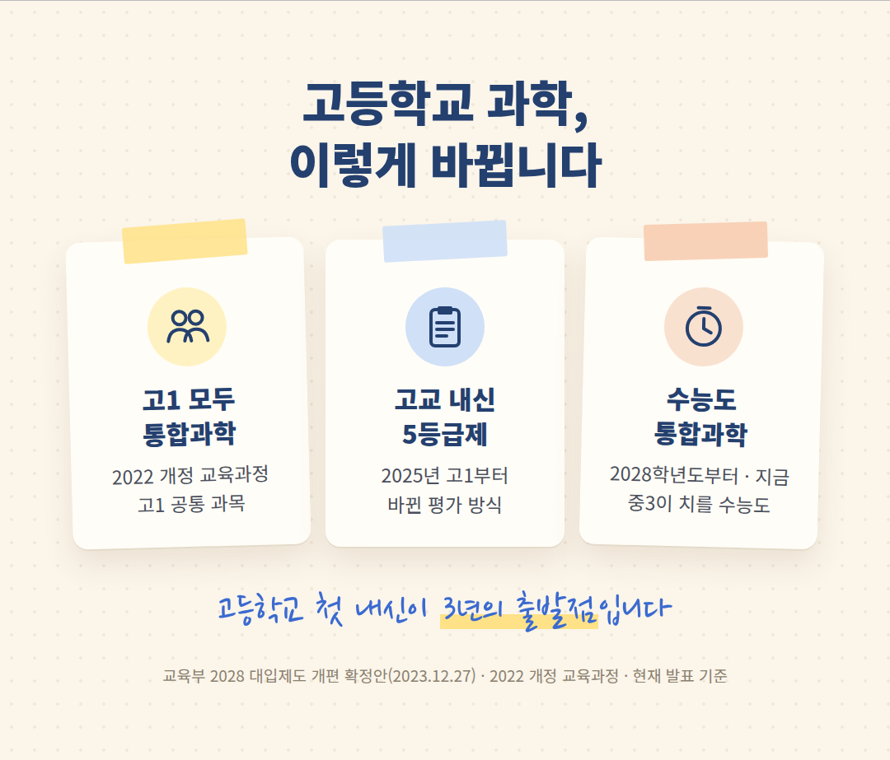
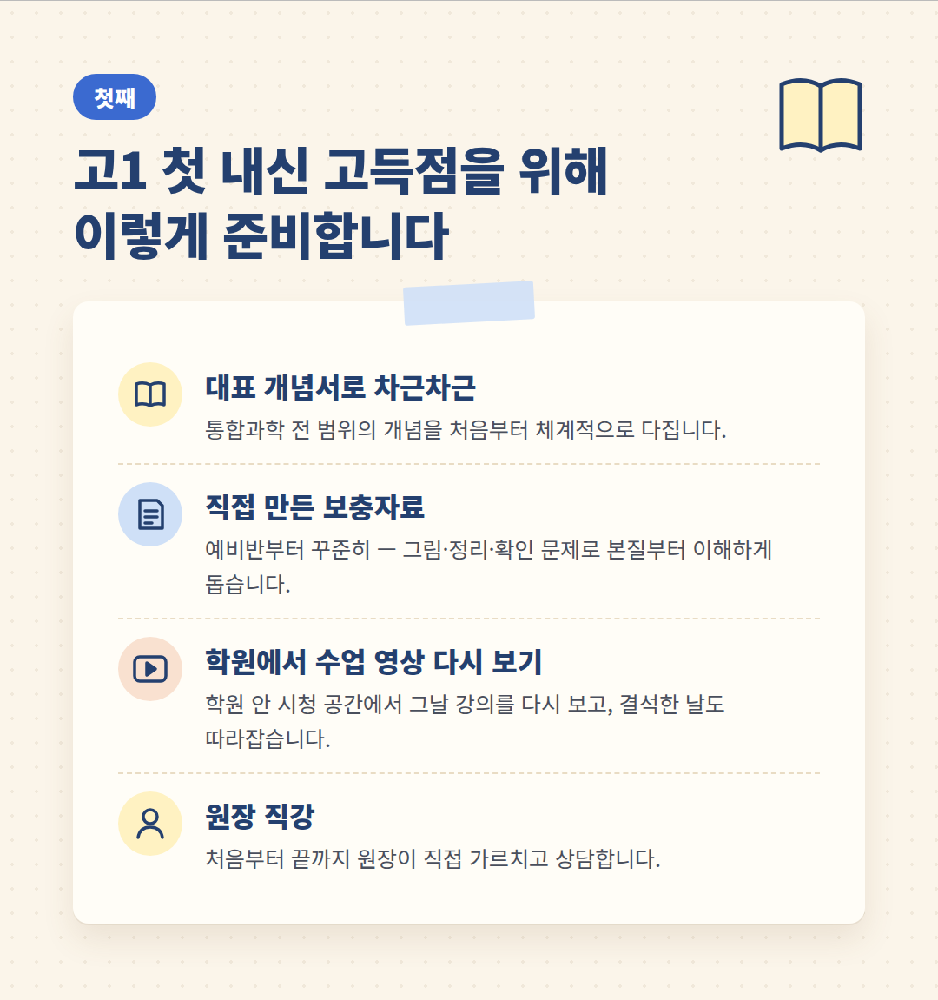
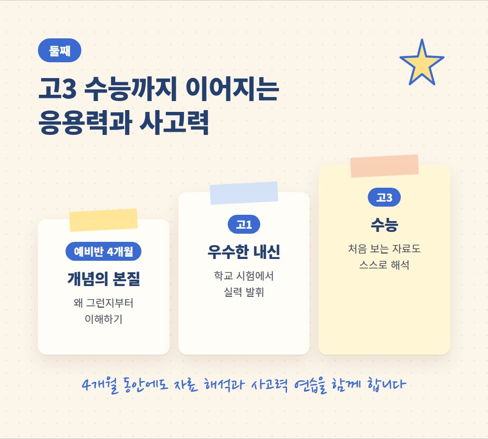
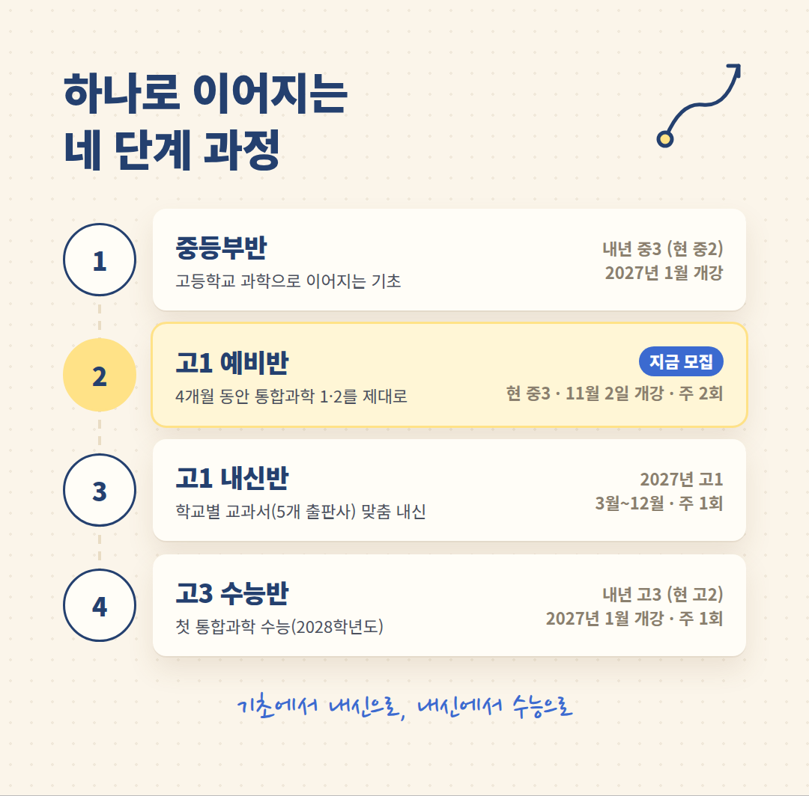

안녕하십니까.
대구 월성동 박찬 통합과학 학원
원장 박찬입니다.
현재 중학교 3학년 자녀를 두신
학부모님께 인사드립니다.
내년 봄, 고등학교에 올라가면
아이들은 처음으로
'통합과학'을 만나게 됩니다.
그 첫걸음을 차근차근 준비하는
고1 예비반을 안내해 드립니다.

4개월 동안 통합과학 1·2를 제대로
개강: 2026년 11월 2일
기간: 2027년 2월 28일까지 4개월
대상: 현 중학교 3학년 (2027년 고1)
반: 화금반 · 수토반 (주 2회)
고등학교 통합과학은
통합과학 1과 통합과학 2, 두 권입니다.
이 4개월 동안 두 권을 제대로 다룹니다.
· 11월 ~ 12월 (2개월) : 통합과학 1
과학의 기초 · 물질과 규칙성 · 시스템과 상호작용
· 1월 ~ 2월 (2개월) : 통합과학 2
변화와 다양성 · 환경과 에너지 · 과학과 미래 사회
두 권의 모든 단원을 빠짐없이,
대충이 아니라 확실하게 다지겠습니다.

왜 예비반만 주 2회일까요
일주일에 한 번 수업을 원하시는
학부모님과 학생도 계십니다.
다른 학원에서도
주 1회 수업만 하는 경우가 많습니다.
고등학교에 올라가면
실제로 일주일에 한 번밖에
시간을 내기 어렵습니다.
그래서 저희도 고1 내신반과 고3 수능반은
주 1회로 운영합니다.
하지만 고등학생이 되기 전,
이 4개월은 비교적
시간의 여유가 있는 시기입니다.
오랜 강의 경험으로 볼 때
여유가 있는 바로 이때
통합과학을 확실하게 잡아 두는 것이
무엇보다 중요합니다.
그래서 고1 예비반만 유일하게
주 2회로 계획했습니다.

고등학교 과학, 이렇게 바뀝니다
2022 개정 교육과정에 따라
고1 학생은 모두 통합과학을 배웁니다.
고교 내신은 2025년 고1부터
5등급제로 바뀌었습니다.
그리고 2028학년도 수능부터
과학탐구는 통합과학 한 과목입니다.
지금 중3 학생들이 치를 수능도
현재 발표 기준으로 같은 체제입니다.
고1 첫 내신이
고등학교 3년의 출발점입니다.

첫째, 고1 첫 내신 고득점을 위해
고등학교 첫 시험에서
좋은 성적을 거두는 것,
그것이 가장 중요하다고 생각합니다.
그래서 이렇게 준비하고 있습니다.
· 대표 개념서로 차근차근
통합과학 전 범위의 개념을
처음부터 체계적으로 다집니다.
· 직접 만든 보충자료
예비반부터 꾸준히 드립니다.
그림과 정리, 확인 문제로
개념을 본질부터 이해하도록 돕습니다.
· 학원에서 수업 영상 다시 보기
학원 안에 영상 시청 공간이 있어
그날 강의를 다시 보고,
결석한 날의 수업도 따라잡을 수 있습니다.
· 원장 직강
처음부터 끝까지 제가 직접
가르치고 상담합니다.

둘째, 고3 수능까지 이어지는 응용력과 사고력
고1 때 배우는 통합과학이
결국 고3 수능 과목이 됩니다.
그래서 이 4개월 동안에도
자료를 해석하고
처음 보는 상황에 개념을 적용하는
사고력 연습을 함께 합니다.
외운 지식은 시험이 끝나면 흩어지지만
본질을 이해한 지식은 남습니다.
통합과학의 전신인 공통과학을 가르쳤던 경험과
오랜 입시 지도의 경험으로
고1에서 고3까지 이어지는 실력을 키우겠습니다.

하나로 이어지는 네 단계 과정
박찬 통합과학 학원의 반은
따로 떨어져 있지 않습니다.
앞 단계에서 기초를 다지고,
그 위에서 고등학교 내신을 준비하고,
내신 수업 속에서 사고력과 응용력을 키워
고3 수능까지 나아가도록
하나의 흐름으로 짜여 있습니다.
· 중등부반
내년 중3이 되는 현 중2 · 2027년 1월 개강
고등학교 과학으로 이어지는 기초
· 고1 예비반 (지금 모집)
현 중3 · 2026년 11월 2일 개강 ~ 2027년 2월 28일
화금반 · 수토반 (주 2회)
4개월 동안 통합과학 1·2를 제대로
· 고1 내신반
2027년 고1 · 2027년 3월 ~ 12월 · 주 1회
학교마다 다른 교과서(5개 출판사)에 맞춘
내신 대비와 사고력·응용력
· 고3 수능반
내년 고3이 되는 현 고2 · 2027년 1월 개강 · 주 1회
첫 통합과학 수능(2028학년도) 대비
중등부반과 고3 수능반은
개강에 맞춰 다시 자세히 안내해 드리겠습니다.

일주일 무료 수강
먼저 일주일 들어 보시고
등록을 결정하셔도 됩니다.
수업이 아이에게 맞는지
직접 확인해 보십시오.
교습비
고1 예비반 교습비(주 2회): 26만 7,000원 【확인 필요 · 월 단위인지】
학원 등록 제2019-115호
오시는 길
대구 달서구 월성동
월성 CGV 건물 5층
상담 문의 053-213-3577
처음 만나는 통합과학,
아이가 자신 있게 시작할 수 있도록
정성껏 준비하겠습니다.
편하게 전화 주십시오.
감사합니다.
박찬 드림